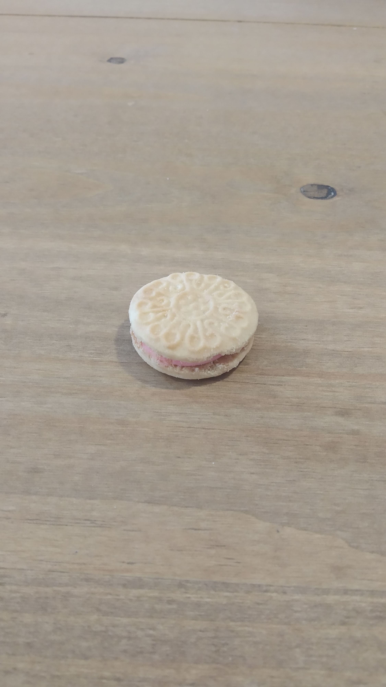
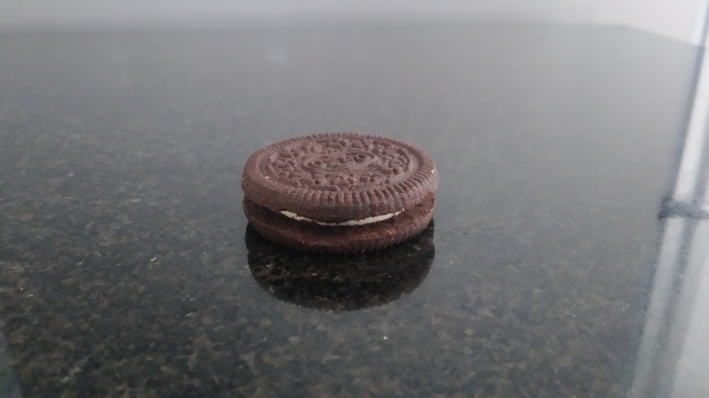
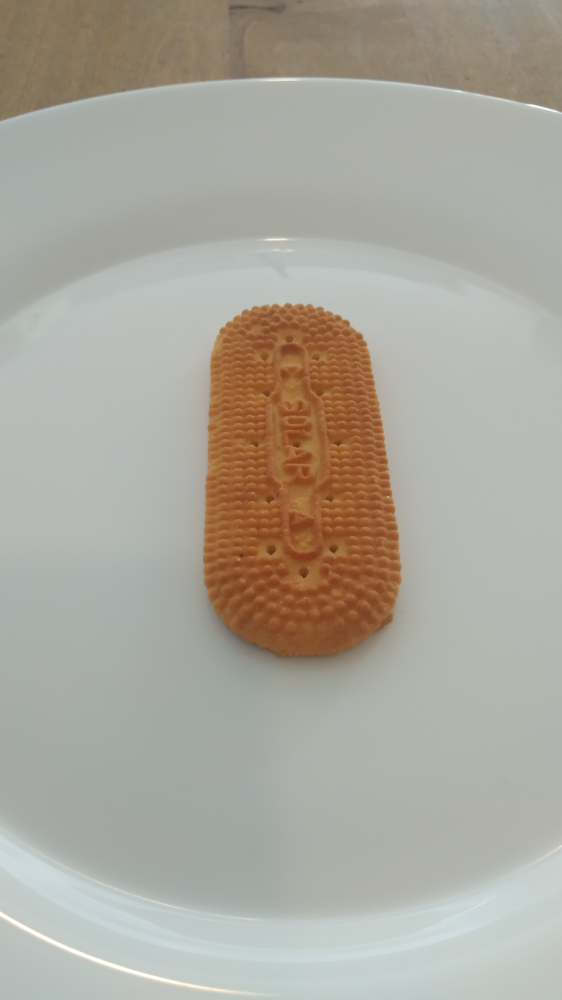
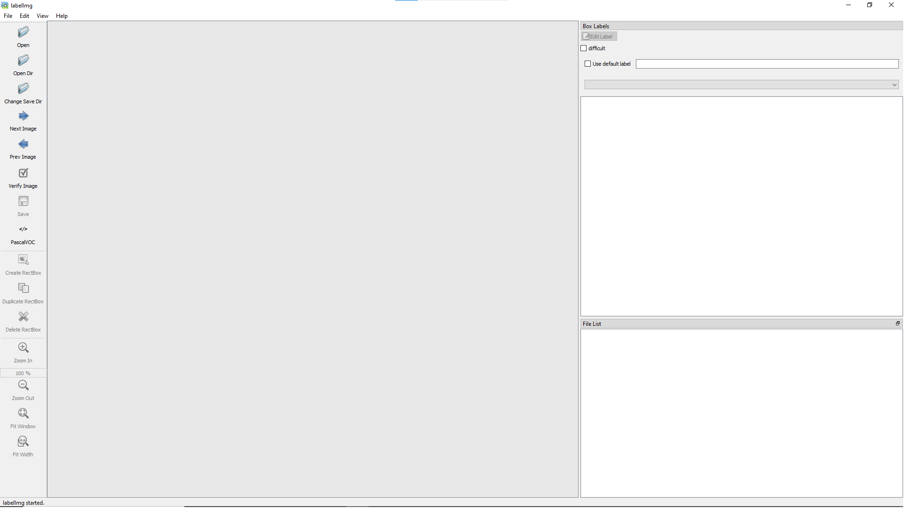
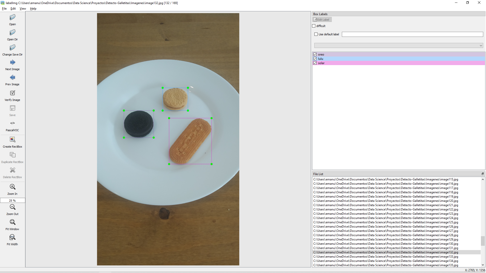
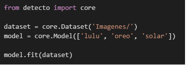

Este mini-proyecto forma parte de la serie de mini-proyectos de machine learning, uno por mes durante todo el 2022.
La idea es sencilla, usando la librería Detecto voy a crear correr un algoritmo de reconocimiento de objetos en 4 videos.
Los objetos que debe reconocer son 3 tipos de galletitas distintas: Lulu, Oreo y Solar.
Para ello, voy a entrenar la red neuronal con un conjunto de fotos de estas galletitas, sacadas y etiquetados por mi, usando la librería labelImg.
Etiquetado
Para poder reconocer mi tipo de galletita en un video real, primero necesito un dataset con los tres tipos de galletitas debidamente etiquetado.
Así que, como primer paso, compre un paquete de cada una de las galletitas y las hice pasar por una show de fotografías:

Ahora, para poder etiquetas mis galletitas usé la librería labelImg.
El procedimiento es bastante sencillo. Una vez instalada la librería en el entorno virtual, se debe escribir su comando en la consola. Esto hará que aparezca el siguiente menú:

Un dato no menor fue que cuando intente usar la librería, mi entorno virtual estaba utilizando Python 3.10, lo cual momento, parecía no ser compatible del todo con labelImg. Por lo cual tuve que crear un nuevo ambiente virtual con Python 3.9
Una vez con labelImg funcionando lo único que hay que hacer es abrir la carpeta donde se encuentran las imagenes a ser etiquetadas, prepararse un mate y etiquetar.
Debo decir que el proceso de etiquetar casi 200 imagenes es largo y tedioso, pero labelImg lo hizo sumamente ágil y disfrutable!

Entrenamiento
El entramiento usando detecto fue sorprendentemente fácil:

Solo 4 líneas de código! 3 si omitimos los import!
Siendo tan breve, explicare línea a línea:
En la primer línea importamos core de la librería Detecto
En la segunda línea definimos una variable "dataset" que va a ser igual al resultado del metodo Dataset de core, y le damos como parametro la dirección de la carpeta donde se encuentran nuestras imagenes etiquetadas para entrenar.
En la tercera línea definimos nuestro modelo, y le pasamos como parámetro una lista con los labels que queremos que aprenda.
Y por último, con un simple mode.fit, usando nuestro dataset como parámetro nuestro model empezara a entrenarse.
En mi ordenador personal tomo un largo tiempo en entrenarse, razón por la cual hice uso de la opción GPU en google colab para entrenar el modelo.
Resultados
Considerando la poca cantidad de imagenes etiquetadas (150) considero los resultados un éxito.
Realmente no esperaba mucho, pero lo que vi, me sorprendió. Para su simpleza, detecto es muy bueno, aunque no sin algunas excepciones:
Este primer video es de los mejores, podemos ver que hay problemas para detectar objetos en movimiento, y además pareciere estar reconociendo la galletita oreo en la sombre de mi mano.
El video de oreo es sin duda el mejor de los 4, claramente el modelo tuvo una mayor facilidad para poder reconocer esta galletita.
Nuevamente se vuelve a ver que identifica oreo en la sombra de mi mano, pero por lo positivo, pareciere identificar la galletita solar correctamente
Este es sin duda el peor de los videos, pasa mas tiempo identificado una oreo en la sombra de mi mano que la galletita lulu
En conclusión, creo que con un dataset mas grande de imagenes, y usando técnicas de data augmentation habríamos llegado un modelo muy exitoso, pero para el poco tiempo de dedicación (unas 4 horas) considero a detecto un completo éxito!